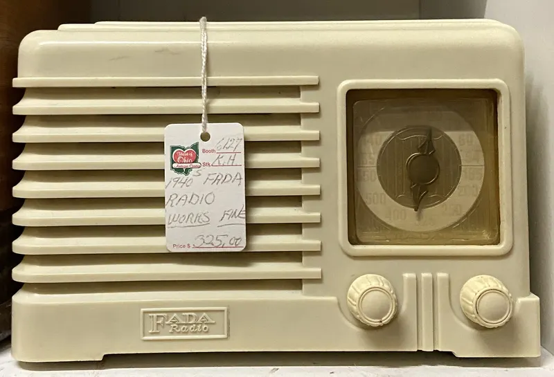
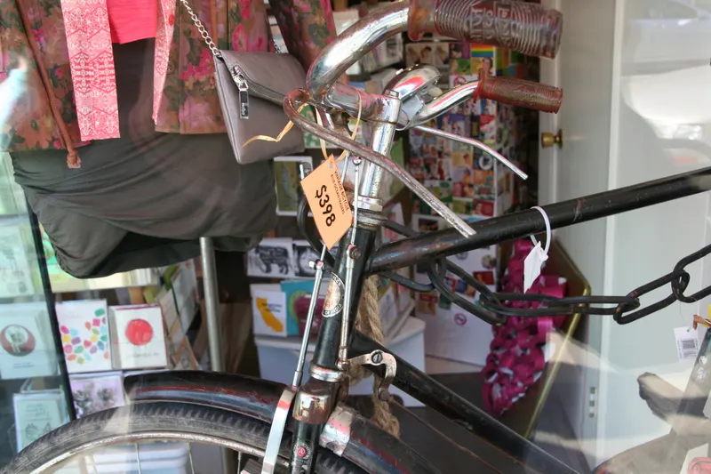
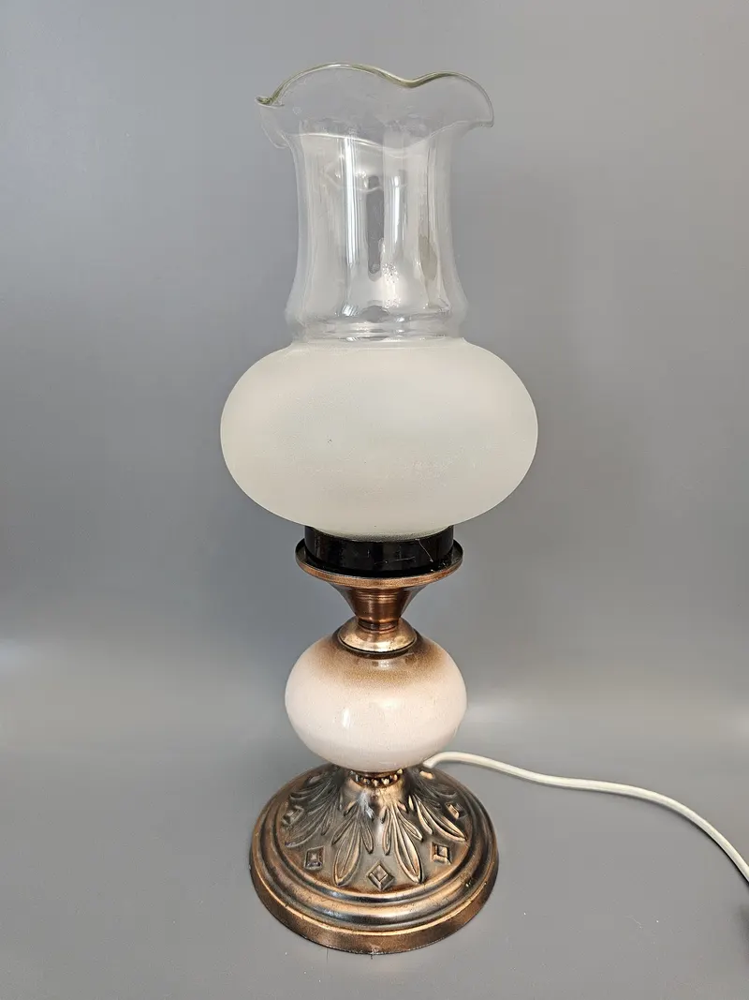

Bútor, szerszám, háztartási és műszaki holmi Orgoványon, a Kossuth Lajos utcában. 2009 óta.

Még szól!példaNéhány darab, ahogy egy friss beérkezés kinézhet. Egy kattintás, és már kérdezhet is róla.
Írja meg, mi az, és küldjön róla egy fotót. Hamar válaszolunk, hogy érdekel-e minket.
Megírom, mi az →

Orgoványon, a Kossuth Lajos utcában. Térkép és útvonaltervezés egy érintéssel.